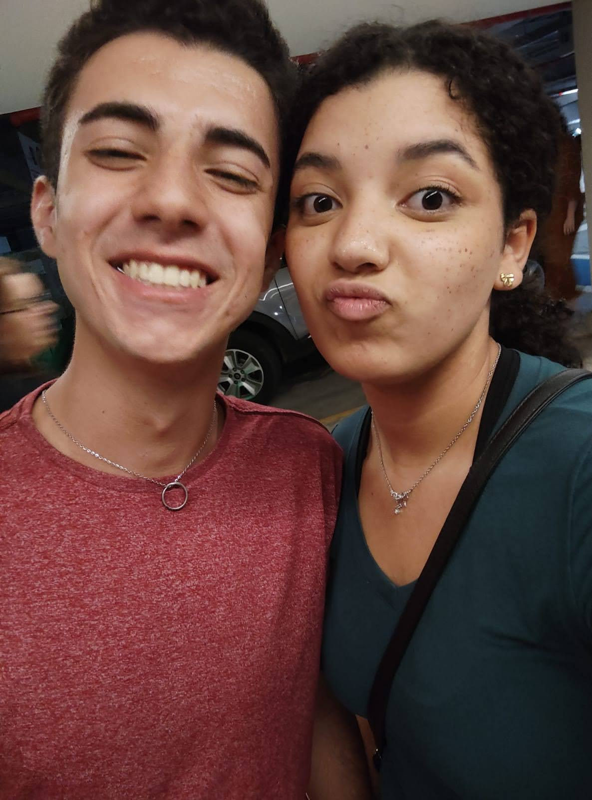
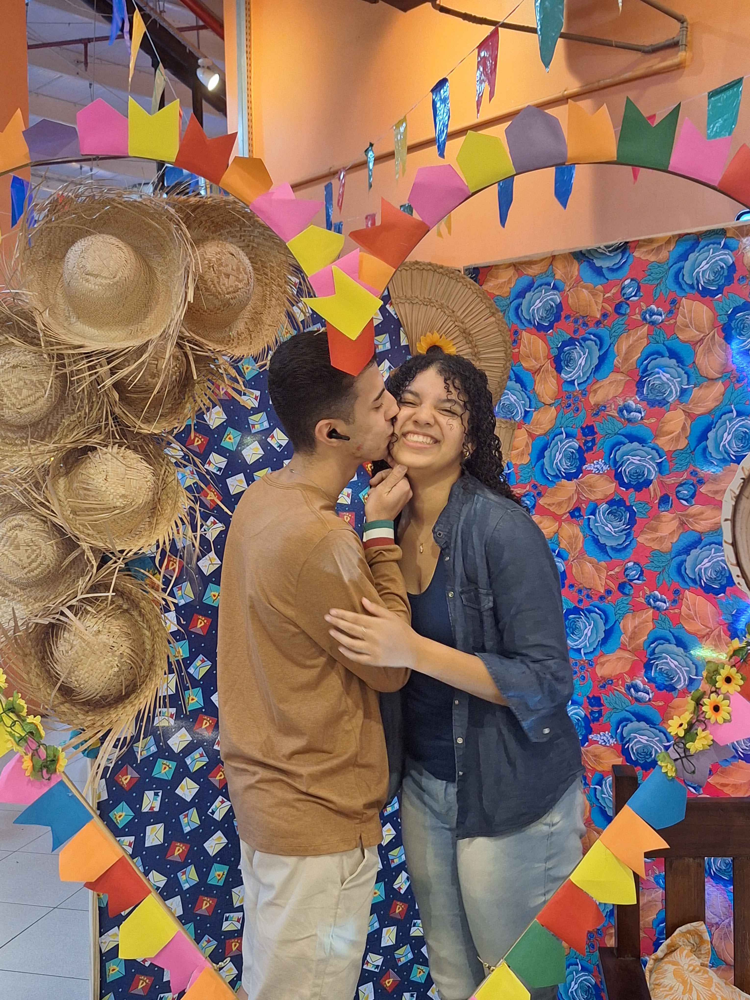
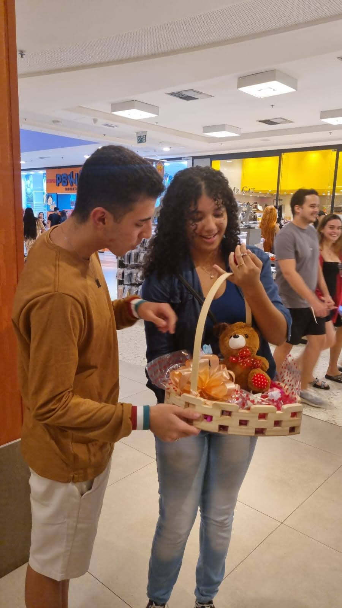

Dia das Mulheres
"Em um mundo de bilhões de estrelas, você é a que ilumina todos os meus caminhos."
O primeiro "oi". Uma troca de mensagens que parecia simples, mas que já demonstrava a fluidez e a sintonia do que estávamos prestes a construir.
Assistindo a Suzume juntos. Foi o momento exato em que o sentimento ganhou forma em palavras e tivemos a certeza da nossa conexão.
A oficialização da nossa parceria. O início de um compromisso sério, onde decidimos caminhar na mesma direção e enfrentar a vida lado a lado.



Rita, minha eterna conquista e o farol dos meus dias.
Assim como as lanternas flutuantes que iluminam a escuridão, você trouxe luz e direção para a minha vida. Nós construímos algo que transcende o momento: uma parceria madura, reconfortante e real, onde cada desafio e vitória nos fortalece.
Nosso amor não vive de promessas vazias, mas de uma devoção diária. Da mesma forma que a engenharia impecável de um Lamborghini Aventador, nossa relação é movida por potência, cuidado constante e a certeza de que fomos feitos para ir longe na estrada da vida.
Você é a minha tulipa mais rara — forte, elegante e dona de uma beleza que me cativa todos os dias. Que possamos continuar sendo o porto seguro um do outro, com a seriedade e o respeito de quem já constrói um futuro sólido juntos.
Amo cada detalhe seu, hoje e para sempre. 💕
Contando cada segundo desde o nosso primeiro "sim"